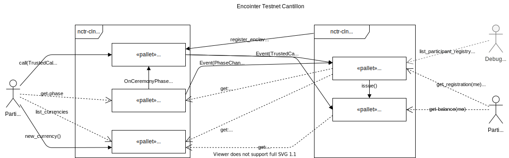

How To Build Your Own Trusted STF
substraTEE is a framework that makes it easy for you to gain confidentiality for your decentralization endeavours.
The development process integrates well with substrate:
- develop and debug your use case on substrate, writing your own pallets
- Once the logic works, move your sensitive pallets to substraTEE without modification and you'll get confidential state (and state updates)
In the following we will assume that you know how to build custom substrate blockchains and we will skip boring explanations.
Example Use Case Encointer
We will walk you through this process with a real-world example: Encointer
Encointer has been developed as a substrate chain with 4 custom pallets added to the node-template:

We will now show you how we can turn Testnet Gesell (all public) in to Testnet Cantillon, featuring confidentiality for sensitive pallets.
In order to protect the privacy of users we will move the balances and ceremony pallets into the substraTEE-enclave. These pallets will still need to interact with the on-chain state, as indicated in the diagram below:

The final code can be inspected on encointer github
TEE Runtime
Substrate chains wrap all their business logic into a runtime made up of pallets. substraTEE does so too, so let's create our TEE runtime:
git clone https://github.com/scs/sgx-runtime.git
this is actually a fork of node-template, stripped from everything we don't need for our case.
Now we need to include our pallets balances and ceremonies exactly the way you're used to from substrate
runtime/src/lib.rs
#![allow(unused_variables)] fn main() { construct_runtime!( pub enum Runtime where Block = Block, NodeBlock = opaque::Block, UncheckedExtrinsic = UncheckedExtrinsic { System: system::{Module, Call, Config, Storage, Event<T>}, Timestamp: timestamp::{Module, Call, Storage, Inherent}, Balances: balances::{Module, Call, Storage, Config<T>, Event<T>}, TransactionPayment: transaction_payment::{Module, Storage}, Sudo: sudo::{Module, Call, Config<T>, Storage, Event<T>}, EncointerCeremonies: encointer_ceremonies::{Module, Call, Storage, Config<T>, Event<T>}, EncointerBalances: encointer_balances::{Module, Call, Storage, Event<T>}, } ); }
Looks familiar? If not, learn from the best
We will skip the nitty gritty of including your pallets.
substraTEE-node
The blockchain we'll be using is based on parity's node-template with one substraTEE-specific pallet that will take care of the worker registry and will proxy TrustedCalls
git clone https://github.com/scs/substraTEE-node
Encointer will add its public pallets to this node tempalte: scheduler and currencies. See encointer-node
substraTEE-worker
The substraTEE-worker is the service running on a Intel SGX enabled machine. It will run our TEE-runtime inside an SGX enclave, operating on encrypted state.
The worker will also be our ChainRelay, a trustless bridge from the blockchain into the SGX enclave.
The worker itself will not need to be modified, it is the framework which runs your custom STF logic. It also offers you a customizable CLI interface
TrustedCall
Now we need a way to call our custom pallet functions isolated in a TEE.
substraTEE encapsulates all the application-specific stuff in its substratee-stf crate that you can customize.
git clone https://github.com/scs/substraTEE-worker
Let's start by defining a new TrustedCall:
encointer-worker/stf/src/lib.rs
#![allow(unused_variables)] fn main() { #[derive(Encode, Decode, Clone)] #[allow(non_camel_case_types)] pub enum TrustedCall { balance_transfer(AccountId, AccountId, CurrencyIdentifier, BalanceType), ceremonies_register_participant(AccountId, CurrencyIdentifier, Option<ProofOfAttendance<MultiSignature, AccountId32>>) } impl TrustedCall { fn account(&self) -> &AccountId { match self { TrustedCall::balance_transfer(account, _, _, _) => account, TrustedCall::ceremonies_register_participant(account, _, _) => account, } } ... }
Important: The first argument of each TrustedCall has to be the incognito AccountId which will sign the TrustedCallSigned which will then be encrypted and sent to the worker through the blockchain as a proxy.
Now that we defined a new call we need to execute it:
encointer-worker/stf/src/sgx.rs
#![allow(unused_variables)] fn main() { pub fn execute(ext: &mut State, call: TrustedCall, _nonce: u32, calls: &mut Vec<OpaqueCall>) { ext.execute_with(|| { let _result = match call { TrustedCall::balance_transfer(from, to, cid, value) => { let origin = sgx_runtime::Origin::signed(AccountId32::from(from)); sgx_runtime::EncointerBalancesCall::<Runtime>::transfer(AccountId32::from(to), cid, value) .dispatch(origin) } TrustedCall::ceremonies_register_participant(from, cid, proof) => { let origin = sgx_runtime::Origin::signed(AccountId32::from(from)); sgx_runtime::EncointerCeremoniesCall::<Runtime>::register_participant(cid, proof) .dispatch(origin) } }; }); } }
Now you see that TrustedCall::ceremonies_register_participant() calls register_participant() in our ceremonies pallet.
This function call depends on the scheduler and currencies pallets which are not present in our TEE runtime. It is on-chain. So we need to tell substraTEE that it needs to fetch on-chain storage (and verify a read-proof) before executing our call:
encointer-worker/stf/src/sgx.rs
#![allow(unused_variables)] fn main() { pub fn get_storage_hashes_to_update(call: &TrustedCall) -> Vec<Vec<u8>> { let mut key_hashes = Vec::new(); match call { TrustedCall::balance_transfer(account, _, _, _) => { }, TrustedCall::ceremonies_register_participant(account, _, _) => { key_hashes.push(storage_value_key("EncointerScheduler", "CurrentPhase")); key_hashes.push(storage_value_key("EncointerScheduler", "CurrentCeremonyIndex")); key_hashes.push(storage_value_key("EncointerCurrencies", "CurrencyIdentifiers")); } }; key_hashes } }
See How to access on-chain storage for more details.
Important: Make sure your on-chain runtime and TEE runtime depend on the same version of substrate. Otherwise, mapping storage keys between the two runtimes might fail.
Finally, we will extend our CLI client to allow us to call our function:
encointer-worker/stf/src/cli.rs
#![allow(unused_variables)] fn main() { ... .add_cmd( Command::new("register-participant") .description("register participant for next encointer ceremony") .options(|app| { app.arg( Arg::with_name("accountid") .takes_value(true) .required(true) .value_name("SS58") .help("AccountId in ss58check format"), ) }) .runner(move |_args: &str, matches: &ArgMatches<'_>| { let arg_who = matches.value_of("accountid").unwrap(); let who = get_pair_from_str(matches, arg_who); let (mrenclave, shard) = get_identifiers(matches); let tcall = TrustedCall::ceremonies_register_participant( sr25519_core::Public::from(who.public()), shard, // for encointer we assume that every currency has its own shard. so shard == cid None ); let nonce = 0; // FIXME: hard coded for now let tscall = tcall.sign(&sr25519_core::Pair::from(who), nonce, &mrenclave, &shard); println!( "send trusted call register_participant for {}", tscall.call.account(), ); perform_operation(matches, &TrustedOperationSigned::call(tscall)); Ok(()) }), ) }
This will allow us to call
encointer-client trusted register-participant //AliceIncognito --mrenclave Jtpuqp6iA98JmhUYwhbcV8mvEgF9uFbksWaAeyALZQA --shard 3LjCHdiNbNLKEtwGtBf6qHGZnfKFyjLu9v3uxVgDL35C
The --mrenclave identifies the TCB while --shard identifies the local currency we're registering for.
Sharding
As you may have guessed by now, Encointer uses sharding. Encointer maintains a global registry of local currencies on-chain (with the currencies pallet). The balances for each local currency are maintained confidentially within substraTEE. One shard for each currency. This means that a worker has to decide what shard it operates on.
See Sharding for more details.
TrustedGetter
Now that everything is super-isolated and confidential, how should we know if our call actually worked?
That's why substraTEE-worker exposes a websocket interface for encrypted and authenticated queries.
We will now implemet a getter that can only be called by the AccountId it refers to.
encointer-worker/stf/src/lib.rs
#![allow(unused_variables)] fn main() { #[derive(Encode, Decode, Clone)] #[allow(non_camel_case_types)] pub enum TrustedGetter { balance(AccountId, CurrencyIdentifier), ceremony_registration(AccountId, CurrencyIdentifier) } impl TrustedGetter { pub fn account(&self) -> &AccountId { match self { TrustedGetter::balance(account, _) => account, TrustedGetter::ceremony_registration(account, _) => account, } } ... }
Again, the first argument specifies the AccountId that is allowed to read its part of the state, authenticated by a signature.
encointer-worker/stf/src/sgx.rs
#![allow(unused_variables)] fn main() { pub fn get_state(ext: &mut State, getter: TrustedGetter) -> Option<Vec<u8>> { ext.execute_with(|| match getter { TrustedGetter::balance(who, cid) => { Some(get_encointer_balance(&who, &cid).encode()) }, TrustedGetter::ceremony_registration(who, cid) => { Some(get_ceremony_registration(&who, &cid).encode()) } }) } ... fn get_ceremony_registration(who: &AccountId, cid: &CurrencyIdentifier) -> ParticipantIndexType { let cindex = match sp_io::storage::get(&storage_value_key( "EncointerScheduler", "CurrentCeremonyIndex")) { Some(val) => if let Ok(v) = CeremonyIndexType::decode(&mut val.as_slice()) { v } else { 0 }, None => 0 }; info!("cindex = {}", cindex); if let Some(res) = sp_io::storage::get(&storage_double_map_key( "EncointerCeremonies", "ParticipantIndex", &(cid,cindex), &StorageHasher::Blake2_128Concat, who, &StorageHasher::Blake2_128Concat, )) { if let Ok(pindex) = ParticipantIndexType::decode(&mut res.as_slice()) { pindex } else { debug!("can't decode ParticipantIndexType for {:x?}", res); 0 } } else { debug!("no registration for caller"); 0 } } }
Note: Currently, the stf is not aware of the runtime metadata, so we have to hard-code hashers for StorageMap and StorageDoubleMap.
Again, we will introduce our getter in the CLI:
encointer-worker/stf/src/cli.rs
#![allow(unused_variables)] fn main() { .add_cmd( Command::new("ceremony-registration") .description("query state if registration for this ceremony") .options(|app| { app.arg( Arg::with_name("accountid") .takes_value(true) .required(true) .value_name("SS58") .help("AccountId in ss58check format"), ) }) .runner(move |_args: &str, matches: &ArgMatches<'_>| { let arg_who = matches.value_of("accountid").unwrap(); println!("arg_who = {:?}", arg_who); let who = get_pair_from_str(matches, arg_who); let (mrenclave, shard) = get_identifiers(matches); let tgetter = TrustedGetter::ceremony_registration(sr25519_core::Public::from(who.public()), shard); let tsgetter = tgetter.sign(&sr25519_core::Pair::from(who)); let res = perform_operation(matches, &TrustedOperationSigned::get(tsgetter)); let ind = if let Some(v) = res { if let Ok(vd) = ParticipantIndexType::decode(&mut v.as_slice()) { vd } else { info!("could not decode value {:x?}", v); 0 } } else { 0 }; println!("{}", ind); Ok(()) }), ) }
So we can query our index in the particpant registry with our CLI
encointer-client trusted ceremony-registration //AliceIncognito --mrenclave Jtpuqp6iA98JmhUYwhbcV8mvEgF9uFbksWaAeyALZQA --shard 3LjCHdiNbNLKEtwGtBf6qHGZnfKFyjLu9v3uxVgDL35C
Happy coding!